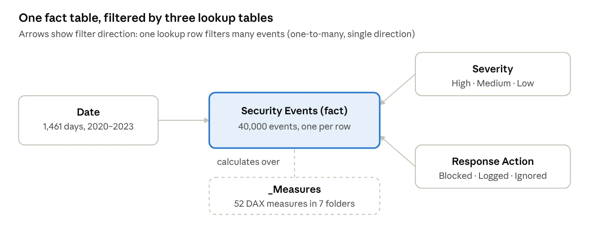

Case study, Nov 2026
Cybersecurity Threat Intelligence Dashboard
40,000 security events, cleaned and tested in Python, then turned into a seven-page Power BI dashboard. The finding that matters: response did not follow risk.

Overview
An end-to-end analytics project on 40,000 recorded security events from 1 January 2020 to 11 October 2023. I cleaned and explored the data in Python, tested the patterns statistically, and built a seven-page interactive Power BI dashboard with a star-schema model and 52 DAX measures. Every headline figure was cross-checked against an independent Python calculation.
The aim was to show what was attacked, how, when, and how each event was handled, in a form security analysts and managers can explore themselves. Raw event logs can't answer that. They need cleaning, a proper model and measures that update with every filter.
The questions
- Which attack types, severities, protocols and traffic types dominate?
- Are some attack types riskier than others?
- Do anomaly scores separate high-risk events from low-risk ones?
- Is the response (Blocked, Logged, Ignored) matched to risk?
- Are there time-of-day, weekday, yearly, device or geographic patterns?
Dataset
- Size
- 40,000 events, one per row, 33 columns
- Period
- 1 Jan 2020 to 11 Oct 2023 (2023 is partial)
- Network
- IPs, ports, protocol, packet length, traffic type, segment, proxy
- Threat
- Attack type, signature, severity, anomaly score (0–100), malware indicators
- Response
- Alerts, IDS/IPS alerts, firewall logs, log source, action taken
- User and device
- User, browser user-agent, city and state
Five indicator columns were about half empty, stored as empty strings. An empty value only means the indicator wasn't recorded.
Process
-
Data cleaning
Python notebook producing a cleaned file with derived time columns: year, month, weekday, hour and time period.
-
Exploratory analysis
Univariate, categorical, bivariate and multivariate analysis, plus a correlation matrix and about 15 presentation charts.
-
Statistical testing
Chi-square tests of independence and a Kruskal–Wallis test in SciPy, to check whether differences in the charts are bigger than chance.
-
Power Query
Quote-aware loading, en-GB date typing, empty strings turned into real blanks, readable flag columns, city and state split, device OS and browser parsed, and bands for anomaly score, packet size and port range.
-
Model and measures
A star schema: one fact table of events filtered by Date, Severity and Response Action tables, all one-to-many and single direction, with 52 DAX measures in seven folders.
-
Validation
Every headline KPI recalculated in pandas and compared with the dashboard: 40,000 events, 13,382 High-severity, average anomaly score 50.11, 20,000 IoC-flagged, 33.8% block rate.
The dashboard
Seven pages share synced slicers for date, attack type, severity, protocol, traffic type and action, with a reset button, cross-filtering and tooltips. Severity and response always use the same colours.
- Executive OverviewKPI cards, monthly attack trend, severity mix, top attack types, response mix
- Attack AnalysisAttack type share, weekday and year-to-month drill-down, type by severity, signatures, protocols
- Network TrafficTraffic type, protocol, packet-size bands, port ranges, traffic trend
- Threat & SeverityAnomaly bands, anomaly score by severity, IoC flags, device OS, states
- Response & OperationsBlocked, Logged and Ignored by severity and attack type, operational-gap table
- InvestigationRow-level event log with IP and user search, used as a drill-through target
- Key InsightsFindings, recommendations and limitations

Response did not follow risk
A High-severity attack was as likely to be ignored as a Low-severity one. Every severity level was blocked about a third of the time.
If response followed risk, the High row would be mostly blocked. Chi-square test of action against severity: p = 0.49. 4,460 High-severity events were ignored.
All findings
| Area | Finding | Evidence |
|---|---|---|
| Response vs severity | Not risk-based | Blocked: High 33.9%, Medium 33.6%, Low 34.0%. Chi-square p = 0.49 |
| Gaps | High-risk events left without action | 4,460 High-severity events ignored; 66.1% not blocked; 6,576 IoC-flagged events ignored |
| Attack types | Even split | DDoS 33.6%, Malware 33.3%, Intrusion 33.2% |
| Attack type vs severity | No type is riskier | Chi-square p = 0.77 |
| Anomaly scores | Uniform and unrelated to severity | Mean 50.11, median 50.35. Kruskal–Wallis p = 0.32 |
| Volume over time | Steady, no trend | About 29 events a day (range 15–49) |
| Time of day | No real peak | Busiest hour 13:00 (1,737) vs quietest 12:00 (1,588) |
| Numeric columns | No correlation | All Pearson |r| ≤ 0.005 |
| IP addresses | No repeats | All 40,000 source and destination IPs unique |
| Devices | Windows leads | Windows 44.9%, Linux 17.9%, macOS 14.5%, iOS 14.4%, Android 8.2% |
Attack types, severities, protocols and responses each split almost exactly into thirds, and every IP appears once. Real security logs cluster by time, source and target, so this points to a synthetic dataset. I treat the project as a demonstration of method, not a description of a real network.
Recommendations
-
Block High-severity and IoC-flagged events automatically
66.1% of High-severity events were not blocked.
-
Send every ignored High-severity or IoC event to a review queue with an owner
4,460 High-severity events were ignored with no recorded follow-up.
-
Validate or recalibrate the anomaly model before using it for triage
Scores are uniform from 0 to 100 and unrelated to severity.
-
Record outcomes: true or false positive, time to contain
“Logged” can't currently be told apart from “resolved”.
-
Add asset criticality and stable host and account keys
Every IP is unique, so repeat attackers can't be ranked.
-
Log benign traffic as well
Without non-attack events, a true detection rate can't be measured.
Lessons learned
-
Pin the date culture
Without en-GB, dates like 05/07 load as May on some machines and July on others.
-
Load with quote handling
Line breaks inside the payload text split rows until the CSV was read with proper quoting.
-
Empty strings aren't blanks
Five columns counted half-empty strings as values until I converted them.
-
Accept the honest result
It took several tests to accept that the finding was “no pattern” and say the data is probably synthetic, rather than talk up 33.6% against 33.2%.
-
Not every requested measure is valid
There is no Critical level and no benign events, so I built IDS/IPS detection coverage instead of a detection rate.
Limitations
- The data looks synthetic, so the findings show the method, not real attack behaviour.
- Labels are as recorded. Nothing confirms an event was malicious or that a block worked.
- The tests show associations or their absence, not causes.
- 2023 stops on 11 October, so its totals aren't comparable with full years.